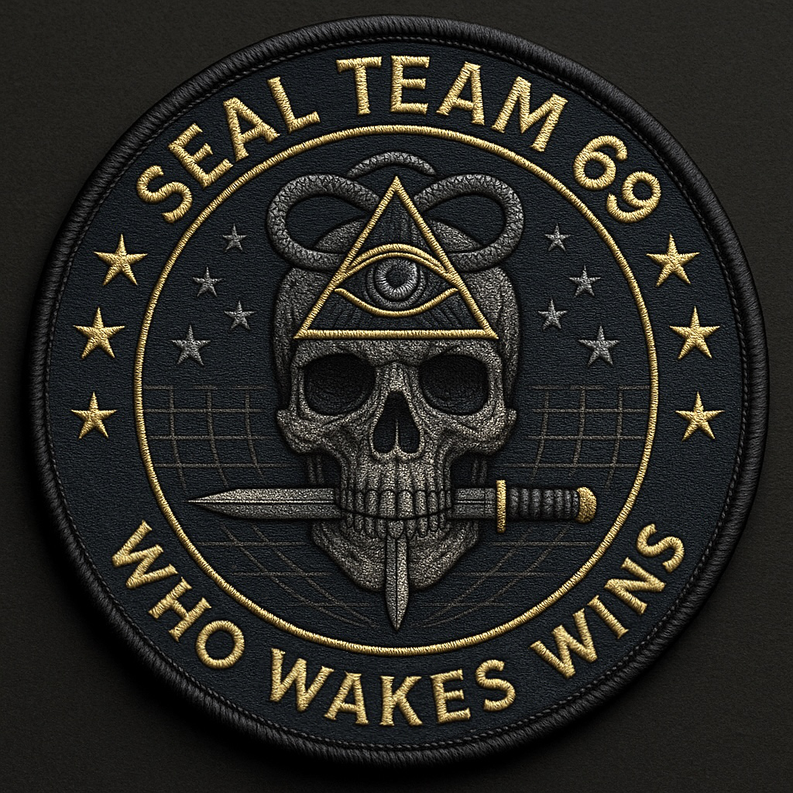

TRANSMISSION 001 / PRE-ARRIVAL
Not all orders are announced.
Some are assembled in silence.
SEAL TEAM 69
The signal precedes the arrival.
ESTABLISH CONTACTNO COORDINATES. JUST A FREQUENCY.

FIG. 069 THE INSIGNIATHE QUIET CHANNEL
Something is
listening.
A signal in the dark.
A mirror waiting to wake.
[SYS] Quiet channel established.
[CNM] THE MIRROR IS NOT YET AWAKE.
Type help to explore the signal.
AWAITING INPUT